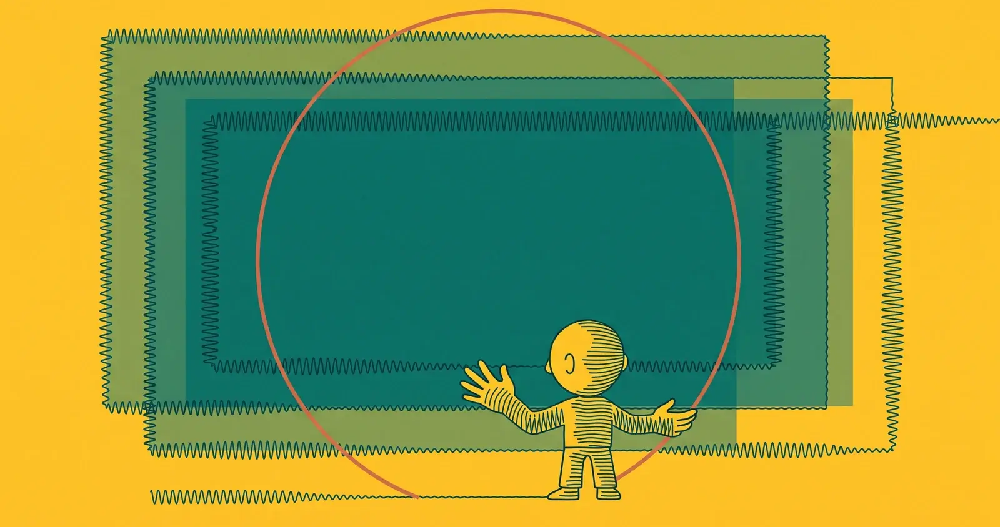

Il linguaggio visivo e le interfacce

Come cambiano l'aspetto e il comportamento delle interfacce Apple: nuovi linguaggi di design, gesti, modi di navigare. È l'area in cui le scelte estetiche diventano scelte di prodotto, perché un cambio di interfaccia ridisegna le abitudini di milioni di persone.
iPadOS 27 introduce un'opzione per tenere la barra dei menu sempre visibile, come avviene su Mac. Una scelta pensata per chi usa iPad con tastiera e vuole un'esperienza desktop più coerente.
Tra le oltre 260 novità elencate nella slide-fiume del keynote WWDC 2026, Apple ha confermato il supporto HDR per l'interfaccia di sistema di macOS Golden Gate: una modifica che riguarda menu, barre degli strumenti e ogni elemento visivo nativo del sistema operativo.
Apple non si e' limitata a un cursore di opacita: ha rivisto le fondamenta di come il materiale Liquid Glass diffonde i contenuti dietro di se, aggiungendo bordi scuri e riflessi brillanti per una leggibilita concretamente migliorata.
iOS 27 porta le Live Activities nel Dynamic Island anche in orientamento orizzontale, eliminando una limitazione che costringeva gli sviluppatori a soluzioni di ripiego su iPhone ruotati.
Con il rilascio della beta sviluppatori di macOS 27 Golden Gate, le nuove sfondi predefiniti in versione chiara e scura sono già disponibili per il download, con un'estetica ispirata alle tinte dorate del Golden Gate Bridge.
La beta sviluppatori 1 di iOS 27 rivela un redesign completo della sezione dedicata agli AirPods all'interno dell'app Impostazioni, con una struttura rinnovata che riorganizza le opzioni audio, l'accessibilità e i controlli gestuali.
Una piccola ma apprezzata novità nella prima beta di iOS 27: è possibile fare swipe per rimuovere i controlli di riproduzione dalla Lock Screen, liberando spazio senza dover mettere in pausa la musica.
Apple ha apportato correzioni concrete a Liquid Glass in risposta alle critiche ricevute dopo iOS 26: le sidebar si estendono ora fino al bordo della finestra, le icone mantengono il proprio colore anziché diventare opache, e tutto il sistema di icone first-party assume un aspetto uniforme su tutte le piattaforme.
iOS 27 porta un nuovo sfondo Pride Luminance che reagisce dinamicamente alla luce ambientale e si integra con il sistema di accenti cromatici di Liquid Glass. Un aggiornamento annuale che quest'anno si inserisce in un design system piu sofisticato.
Apple porta su macOS Golden Gate il controllo granulare della trasparenza Liquid Glass: un cursore permette di passare dall'aspetto completamente opaco a quello completamente traslucido, risposta diretta alle critiche sulla leggibilità dell'interfaccia.
Apple non si ferma ai bordi arrotondati: con iOS 27, il Liquid Glass viene incorporato direttamente nell'illustrazione delle icone, aggiungendo profondità visiva all'interno dell'artwork stesso.
macOS Golden Gate introduce una barra degli strumenti piu coerente tra le app e un cursore di opacita per Liquid Glass, rispondendo alle critiche sul design introdotto in macOS Tahoe. Un ritocco calibrato, non una revisione.
macOS 27 introduce target di tocco piu grandi, controlli gesture ottimizzati e adattamenti UI derivati da iPadOS, preparando il terreno software per il MacBook con display touchscreen su cui si rincorrono le indiscrezioni da mesi.
Su macOS Golden Gate Siri non apre piú una finestra separata: compare come pannello contestuale dentro l'app che si sta usando. In Pages, il pannello "Edit with Siri" permette di comporre e modificare testo senza uscire dal documento. L'interfaccia Siri AI é esclusivamente scura, senza modalitá chiara.
Apple applica Liquid Glass direttamente alle icone delle app con livelli aggiuntivi di profondita, impone un corner radius uniforme a tutte le finestre e ridisegna la toolbar per ridurre il rumore visivo — risposte concrete alle critiche di leggibilita di macOS Tahoe.
Il nuovo slider per regolare l'intensitá del Liquid Glass in iOS 27 non è solo personalizzazione estetica: è una risposta diretta a fallimenti di accessibilitá documentati dal Nielsen Norman Group dopo il lancio di iOS 26.
Piccola ma visibile modifica al comportamento delle notifiche in iOS 27: invece di comparire dall'alto, scivolano dal bordo sinistro. Un cambiamento che altera l'abitudine visiva di quindici anni di iPhone.
Oltre allo slider di opacità già annunciato, iOS 27 porta modifiche strutturali al design Liquid Glass: la ricerca torna integrata nella tab bar, le sidebar si espandono fino al bordo della finestra e Apple risponde alle critiche documentate sull'accessibilità visiva.
In iOS 27, Siri AI abbandona la bolla sul bordo inferiore dello schermo: l'animazione si sposta nel Dynamic Island e uno swipe verso il basso dal centro dello schermo apre direttamente l'interfaccia conversazionale. Cambia il punto di accesso, cambia la metafora.
Con macOS Golden Gate, Apple ha rivisto in modo sistematico alcuni elementi fondamentali dell'interfaccia: una toolbar piú strutturata uguale per tutte le app, sidebar che si estendono fino ai bordi della finestra e icone con piú Liquid Glass e contrasto migliorato.
macOS 27 porta un ridisegno contenuto rispetto a Tahoe, con modifiche agli effetti di trasparenza e ai contrasti per risolvere i problemi di leggibilità più segnalati dagli utenti nel corso dell'anno.
iOS 27 introduce un cursore di sistema per regolare gli effetti Liquid Glass sull'intera interfaccia e permette di costruire automazioni in Shortcuts descrivendo l'azione in linguaggio naturale, senza blocchi di codice.
Le nuove versioni di iOS, iPadOS e macOS
Apple Intelligence e il nuovo corso di Siri
Xcode, Swift e gli strumenti per chi costruisce
visionOS e lo spatial computing
Salute, fitness e watchOS
iCloud, Continuity e l'ecosistema
Privacy e sicurezza